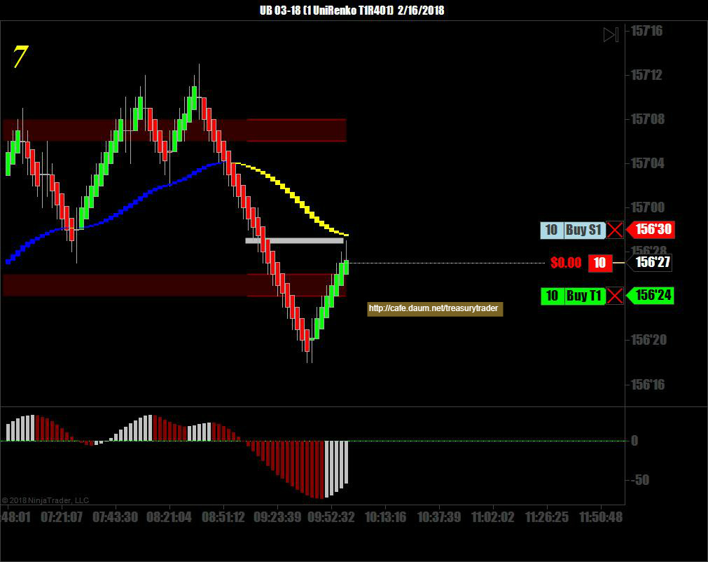
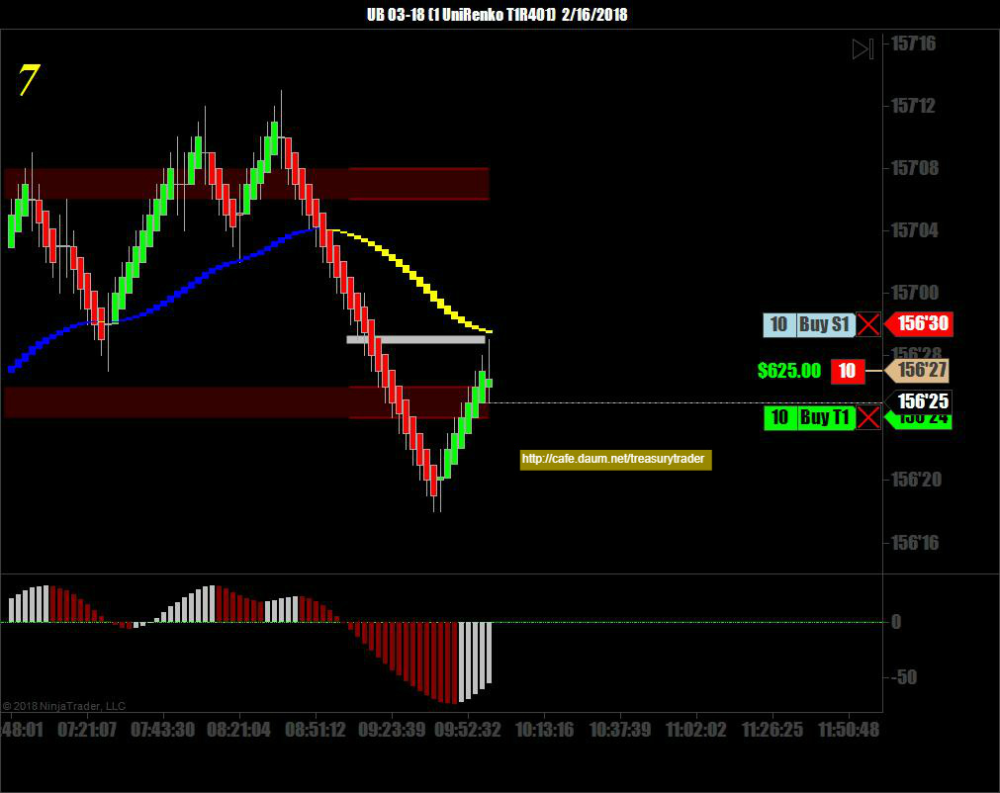
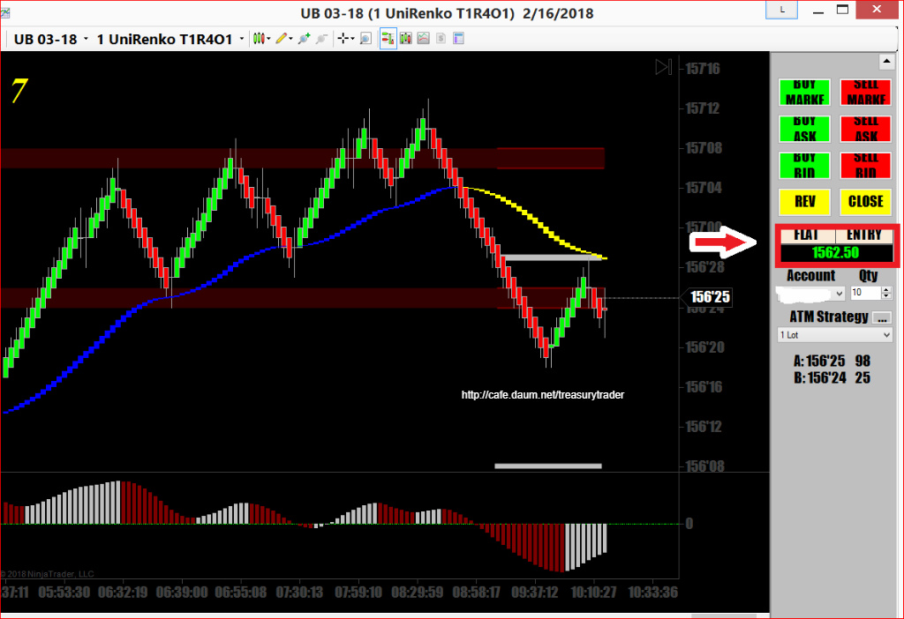

아침에 늦게 일어나서 다른일 좀 보다가 9시 넘어서 매매를 시작했는데
별로 큰 움직임은 없는날임
경제지표는 building permit하고 신규주택착공
깜짝 뉴스가 없는지라 장은 별로 반응하지 않았음
오늘은 간만에 Ultra Bond UB 로 붙었음
UB는 움직임이 거의 크루드오일하고 비슷한 수준임
몇초에서 몇분안에 먹고 나오는 스캘핑하기 좋은 선물임


UB는 움직임이 크루드오일 수준인데 돈은 틱당 $31.25 로 계산하니까
크루드오일에 비해 3배 정도 수익 또는 손실.
DAX하고 맞먹을만큼 대박과 쪽박의 선물임
그래서 UB를 매매할 때는 10Lot이상 잘 못지름
한방 제대로 걸리면 순식간에 몇만 달러 손실남
누가 이걸 정했는지 몰라도 잘못된것 같음
다른 국채에 비해 절반도 안움직이는 ZN은 제일 적게주고
엄청나게 움직이는 UB는 많이주고..
반대로 되야 맞을 듯.

오늘매매수익 $1,562.50
늦게 시작해서 그냥 기다리다 기준선 무너지고 반등했다 다시 하락하는 순간 매도진입
눌림목 받아치기- 성공
회원님들 모두 즐거운 주말 되세요